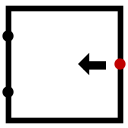

移位器
移位器
| 库： | 算术 |
| 引入版本： | 2.3.0 |
| 外观： |
 |
行为
此组件包含两个输入：data 和 dist，以及一个输出，该输出是将 data 移位 dist 位后的结果。data 和输出具有相同的位数。该组件支持以下移位类型：
- 逻辑左移：data 中的所有位向左移动 dist 位，低 dist 位用 0 填充。例如，11001011 逻辑左移两位后为 00101100。（高两位的 1 丢失。）
- 逻辑右移：data 中的所有位向右移动 dist 位，高 dist 位用 0 填充。例如，11001011 逻辑右移两位后为 00110010。（低两位的 1 丢失。）
- 算术右移：data 中的所有位向右移动 dist 位，高 dist 位用 data 最高位的重复值填充。例如，11001011 算术右移两位后为 11110010。
- 循环左移：data 中的所有位向左移动 dist 位，高 dist 位回绕到低位。例如，11001011 循环左移两位后为 00101111。
- 循环右移：data 中的所有位向右移动 dist 位，低 dist 位回绕到高位。例如，11001011 循环右移两位后为 11110010。
请注意，如果 dist 包含任何浮空或错误输入，则输出将完全由错误值组成，因为无法判断应将输入移位多远。
引脚
- 西侧，北端（输入，位宽与 数据位宽 属性一致）
- 要移位的值。
- 西侧，南端（输入，位宽按下文计算）
- 将 data 输入移位的位数。此输入应具有足够多的位数，以表示从 0 到比数据位宽小 1 的任何移位距离；也就是说，它应为数据位宽以 2 为底的对数的上取整值。例如，如果数据位宽为 8，则此输入需要 3 位；如果为 9，则需要 4 位。
- 东侧（输出，位宽与 数据位宽 属性一致）
- 将输入值按输入距离移位后的结果。
属性
当组件被选中或正在放置时，Alt-0 至 Alt-9 会更改其 数据位宽 属性。
- 数据位宽
- data 输入和输出的位宽。
- 移位类型
- 上述五种可能的移位类型之一（逻辑左移、逻辑右移、算术右移、循环左移、循环右移）。
手形工具行为
无。
文本工具行为
无。
返回库参考